| metrica | valor | |
|---|---|---|
| 0 | Total de avaliações | 11479.000000 |
| 1 | Avaliações com comentário em q25 | 6017.000000 |
| 2 | Avaliações com comentário em q26 | 5102.000000 |
| 3 | Proporção com comentário em q25 | 0.524175 |
| 4 | Proporção com comentário em q26 | 0.444464 |
Análise discursiva das questões q25 e q26
Objetivo
Este material analisa as questões discursivas da base de avaliações:
- q25: principais aspectos positivos da disciplina;
- q26: sugestões para melhoria da disciplina.
A análise é feita em diferentes recortes:
- FT como um todo;
- por curso analítico;
- por ano analítico.
Além disso, o documento apresenta:
- cobertura dos comentários ao longo do tempo;
- análise de sentimentos heurística;
- nuvens de palavras;
- termos e bigramas mais frequentes;
- categorias temáticas recorrentes.
Observação metodológica
A análise de sentimentos aqui é lexicon-based e tem caráter indicativo, não definitivo. Ela é útil para apontar tendências gerais, mas não substitui leitura qualitativa dos comentários.
Estrutura curricular hardcoded
Enriquecimento analítico da base
Cobertura geral dos comentários
Funções auxiliares para texto
Preparação das bases q25 e q26
| questao | n_comentarios | n_turmas | n_disciplinas | tamanho_medio_tokens | |
|---|---|---|---|---|---|
| 0 | q25 | 6017 | 864 | 269 | 8.529334 |
| 1 | q26 | 5102 | 841 | 263 | 11.255978 |
Participação e proporção de comentários ao longo do tempo
| periodo | n_avaliacoes | n_turmas | taxa_comentario_q25 | taxa_comentario_q26 | |
|---|---|---|---|---|---|
| 0 | 2022.2 | 1709 | 121 | 0.549444 | 0.476887 |
| 1 | 2023.1 | 1767 | 118 | 0.569892 | 0.499717 |
| 2 | 2023.2 | 1298 | 130 | 0.534669 | 0.440678 |
| 3 | 2024.1 | 2070 | 145 | 0.479710 | 0.415459 |
| 4 | 2024.2 | 1377 | 151 | 0.492375 | 0.411038 |
| 5 | 2025.1 | 1930 | 151 | 0.537824 | 0.452332 |
| 6 | 2025.2 | 1328 | 133 | 0.503012 | 0.401355 |

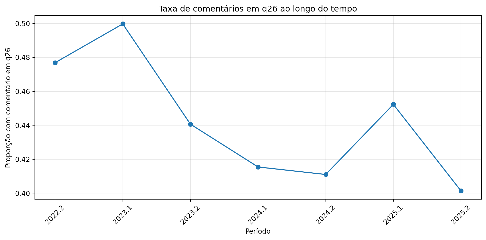
Questão q25 — Aspectos positivos
Cobertura e sentimento geral
| n_comentarios | n_turmas | n_disciplinas | tamanho_medio | sentimento_medio | prop_positivos | prop_neutros | prop_negativos | |
|---|---|---|---|---|---|---|---|---|
| 0 | 6017 | 864 | 269 | 8.529334 | 0.590739 | 0.617085 | 0.361974 | 0.020941 |
q25 ao longo do tempo
| periodo | n_comentarios | n_turmas | n_disciplinas | tamanho_medio | sentimento_medio | prop_positivos | prop_neutros | prop_negativos | |
|---|---|---|---|---|---|---|---|---|---|
| 0 | 2022.2 | 939 | 112 | 92 | 8.077742 | 0.617803 | 0.637913 | 0.347178 | 0.014909 |
| 1 | 2023.1 | 1007 | 106 | 86 | 9.461768 | 0.585998 | 0.611718 | 0.367428 | 0.020854 |
| 2 | 2023.2 | 694 | 118 | 101 | 8.171470 | 0.550768 | 0.579251 | 0.397695 | 0.023055 |
| 3 | 2024.1 | 993 | 136 | 109 | 8.625378 | 0.600868 | 0.617321 | 0.372608 | 0.010070 |
| 4 | 2024.2 | 678 | 133 | 113 | 8.657817 | 0.589230 | 0.619469 | 0.355457 | 0.025074 |
| 5 | 2025.1 | 1038 | 137 | 113 | 8.359345 | 0.603757 | 0.634875 | 0.337187 | 0.027938 |
| 6 | 2025.2 | 668 | 122 | 100 | 8.121257 | 0.567615 | 0.604790 | 0.366766 | 0.028443 |
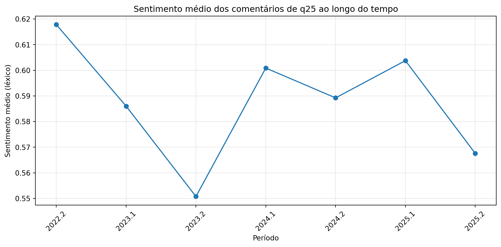
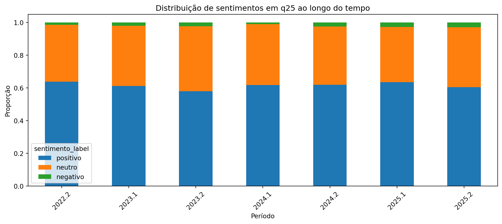
q25 por curso
| curso_analitico | n_comentarios | n_turmas | n_disciplinas | tamanho_medio | sentimento_medio | prop_positivos | prop_neutros | prop_negativos | |
|---|---|---|---|---|---|---|---|---|---|
| 0 | Ambiental | 877 | 99 | 30 | 9.017104 | 0.572083 | 0.604333 | 0.372862 | 0.022805 |
| 1 | Basicas | 1481 | 118 | 15 | 8.863606 | 0.653399 | 0.674544 | 0.309251 | 0.016205 |
| 2 | Informatica | 1319 | 176 | 38 | 7.853677 | 0.589635 | 0.614860 | 0.364670 | 0.020470 |
| 3 | Telecom | 365 | 68 | 31 | 7.512329 | 0.600183 | 0.610959 | 0.380822 | 0.008219 |
| 4 | Transportes | 550 | 103 | 37 | 8.156364 | 0.498571 | 0.527273 | 0.447273 | 0.025455 |
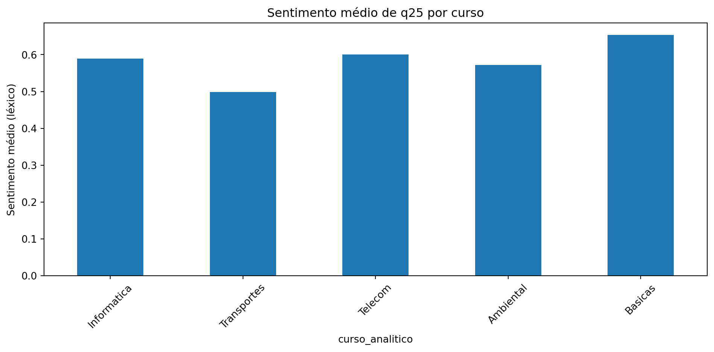
q25 por ano analítico
| ano_analitico | n_comentarios | n_turmas | n_disciplinas | tamanho_medio | sentimento_medio | prop_positivos | prop_neutros | prop_negativos | |
|---|---|---|---|---|---|---|---|---|---|
| 0 | 1 | 1790 | 162 | 30 | 7.437989 | 0.609804 | 0.631844 | 0.351397 | 0.016760 |
| 1 | 2 | 1023 | 146 | 35 | 10.104594 | 0.647209 | 0.670577 | 0.312805 | 0.016618 |
| 2 | 3 | 571 | 106 | 35 | 7.343257 | 0.605020 | 0.628722 | 0.348511 | 0.022767 |
| 3 | 4 | 473 | 70 | 28 | 8.835095 | 0.556519 | 0.581395 | 0.403805 | 0.014799 |
| 4 | 5 | 265 | 32 | 13 | 10.200000 | 0.492066 | 0.539623 | 0.415094 | 0.045283 |
| 5 | 6 | 122 | 15 | 5 | 7.598361 | 0.323770 | 0.336066 | 0.655738 | 0.008197 |
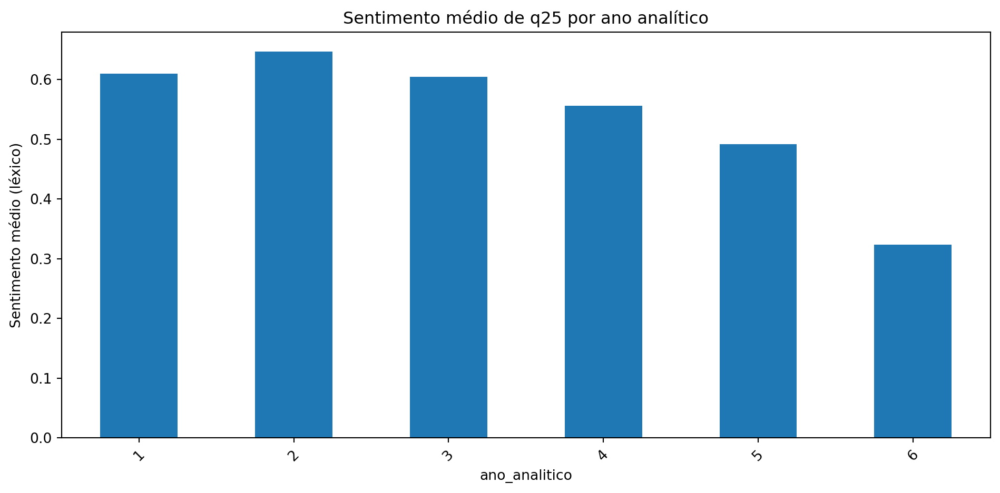
Nuvens de palavras — q25
FT como um todo
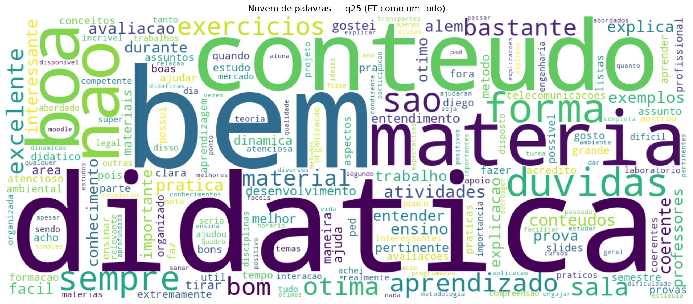
Por curso
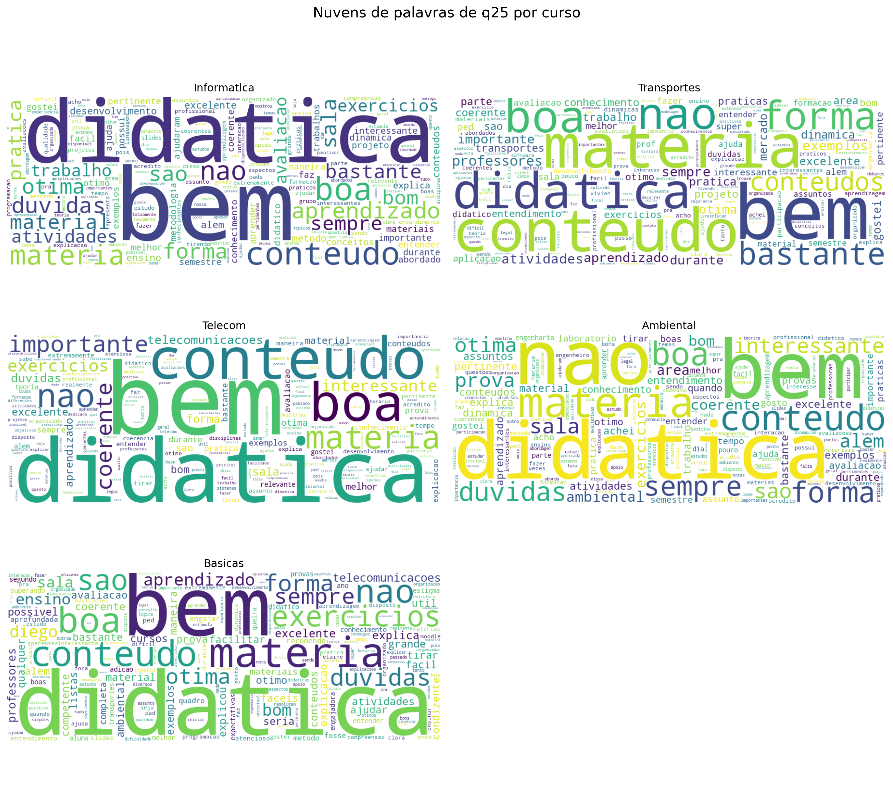
Por ano analítico
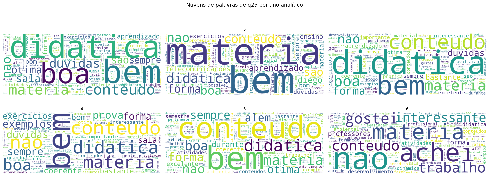
Termos e bigramas mais frequentes — q25
| token | frequencia | |
|---|---|---|
| 0 | bem | 1097 |
| 1 | didatica | 1051 |
| 2 | conteudo | 868 |
| 3 | materia | 836 |
| 4 | boa | 736 |
| 5 | nao | 663 |
| 6 | forma | 461 |
| 7 | duvidas | 433 |
| 8 | sempre | 420 |
| 9 | sao | 405 |
| 10 | aprendizado | 363 |
| 11 | otima | 356 |
| 12 | exercicios | 344 |
| 13 | sala | 338 |
| 14 | bom | 323 |
| 15 | excelente | 294 |
| 16 | bastante | 291 |
| 17 | material | 273 |
| 18 | atividades | 268 |
| 19 | pratica | 244 |
| 20 | conteudos | 241 |
| 21 | interessante | 237 |
| 22 | coerente | 236 |
| 23 | avaliacao | 226 |
| 24 | explica | 226 |
| 25 | alem | 225 |
| 26 | ensino | 224 |
| 27 | exemplos | 219 |
| 28 | durante | 201 |
| 29 | professores | 199 |
| bigrama | frequencia | |
|---|---|---|
| 0 | otima didatica | 176 |
| 1 | boa didatica | 169 |
| 2 | explica bem | 151 |
| 3 | didatica boa | 142 |
| 4 | tirar duvidas | 135 |
| 5 | alem disso | 66 |
| 6 | mercado trabalho | 60 |
| 7 | metodo ensino | 58 |
| 8 | metodo avaliacao | 58 |
| 9 | didatica excelente | 58 |
| 10 | materia nao | 57 |
| 11 | materia bem | 55 |
| 12 | excelente didatica | 49 |
| 13 | materia maneira | 49 |
| 14 | ensino materia | 49 |
| 15 | sao bem | 48 |
| 16 | explicou materia | 48 |
| 17 | forma aprofundada | 48 |
| 18 | conteudo bem | 47 |
| 19 | conteudo abordado | 46 |
| 20 | ambiental transportes | 46 |
| 21 | facilitar aprendizado | 46 |
| 22 | fosse possivel | 46 |
| 23 | grande adicao | 46 |
| 24 | professores telecomunicacoes | 46 |
Temas mais citados — q25
| proporcao | |
|---|---|
| didatica_clareza | 0.363803 |
| organizacao_ritmo | 0.086256 |
| material_apoio | 0.077281 |
| exercicios_pratica | 0.208742 |
| avaliacao_correcao | 0.109855 |
| atendimento_duvidas | 0.116005 |
| infraestrutura | 0.074622 |
| motivacao_relacao | 0.153731 |
| curso_analitico | didatica_clareza | organizacao_ritmo | material_apoio | exercicios_pratica | avaliacao_correcao | atendimento_duvidas | infraestrutura | motivacao_relacao | |
|---|---|---|---|---|---|---|---|---|---|
| 0 | Ambiental | 0.338655 | 0.092360 | 0.054732 | 0.194983 | 0.132269 | 0.126568 | 0.085519 | 0.198404 |
| 1 | Basicas | 0.476030 | 0.089129 | 0.089804 | 0.213369 | 0.130317 | 0.145847 | 0.069548 | 0.109386 |
| 2 | Informatica | 0.329795 | 0.082638 | 0.103867 | 0.205459 | 0.109174 | 0.094769 | 0.079606 | 0.127369 |
| 3 | Telecom | 0.323288 | 0.106849 | 0.065753 | 0.213699 | 0.093151 | 0.106849 | 0.084932 | 0.147945 |
| 4 | Transportes | 0.270909 | 0.089091 | 0.050909 | 0.254545 | 0.085455 | 0.076364 | 0.052727 | 0.201818 |
| ano_analitico | didatica_clareza | organizacao_ritmo | material_apoio | exercicios_pratica | avaliacao_correcao | atendimento_duvidas | infraestrutura | motivacao_relacao | |
|---|---|---|---|---|---|---|---|---|---|
| 0 | 1 | 0.378212 | 0.068715 | 0.063687 | 0.176536 | 0.106145 | 0.134078 | 0.086034 | 0.126257 |
| 1 | 2 | 0.416422 | 0.102639 | 0.107527 | 0.220919 | 0.116325 | 0.101662 | 0.071359 | 0.149560 |
| 2 | 3 | 0.334501 | 0.089317 | 0.070053 | 0.220665 | 0.129597 | 0.101576 | 0.043783 | 0.173380 |
| 3 | 4 | 0.304440 | 0.128964 | 0.059197 | 0.264271 | 0.145877 | 0.099366 | 0.069767 | 0.158562 |
| 4 | 5 | 0.316981 | 0.075472 | 0.067925 | 0.241509 | 0.128302 | 0.098113 | 0.079245 | 0.222642 |
| 5 | 6 | 0.131148 | 0.065574 | 0.024590 | 0.139344 | 0.065574 | 0.057377 | 0.032787 | 0.180328 |
Questão q26 — Sugestões para melhoria
Cobertura e sentimento geral
| n_comentarios | n_turmas | n_disciplinas | tamanho_medio | sentimento_medio | prop_positivos | prop_neutros | prop_negativos | |
|---|---|---|---|---|---|---|---|---|
| 0 | 5102 | 841 | 263 | 11.255978 | 0.090351 | 0.19365 | 0.706194 | 0.100157 |
q26 ao longo do tempo
| periodo | n_comentarios | n_turmas | n_disciplinas | tamanho_medio | sentimento_medio | prop_positivos | prop_neutros | prop_negativos | |
|---|---|---|---|---|---|---|---|---|---|
| 0 | 2022.2 | 815 | 113 | 93 | 10.516564 | 0.082261 | 0.192638 | 0.698160 | 0.109202 |
| 1 | 2023.1 | 883 | 108 | 88 | 10.130238 | 0.084618 | 0.176670 | 0.729332 | 0.093998 |
| 2 | 2023.2 | 572 | 112 | 95 | 10.921329 | 0.079720 | 0.171329 | 0.739510 | 0.089161 |
| 3 | 2024.1 | 860 | 140 | 112 | 11.940698 | 0.133124 | 0.230233 | 0.681395 | 0.088372 |
| 4 | 2024.2 | 566 | 125 | 107 | 12.349823 | 0.075854 | 0.203180 | 0.669611 | 0.127208 |
| 5 | 2025.1 | 873 | 129 | 106 | 10.586483 | 0.108076 | 0.198167 | 0.720504 | 0.081329 |
| 6 | 2025.2 | 533 | 114 | 94 | 13.440901 | 0.040981 | 0.170732 | 0.699812 | 0.129456 |
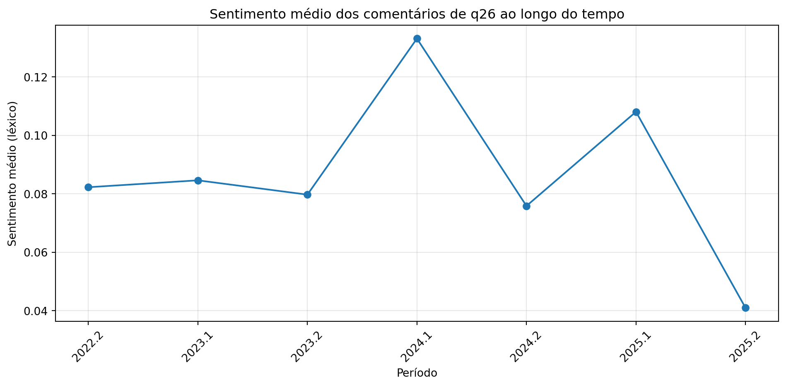
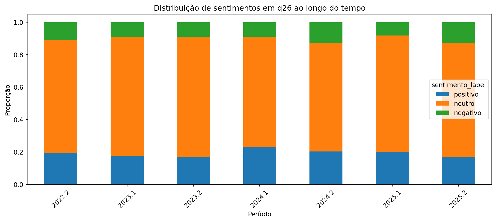
q26 por curso
| curso_analitico | n_comentarios | n_turmas | n_disciplinas | tamanho_medio | sentimento_medio | prop_positivos | prop_neutros | prop_negativos | |
|---|---|---|---|---|---|---|---|---|---|
| 0 | Ambiental | 762 | 98 | 30 | 11.446194 | 0.089895 | 0.192913 | 0.700787 | 0.106299 |
| 1 | Basicas | 1275 | 120 | 15 | 10.090980 | 0.108082 | 0.204706 | 0.698824 | 0.096471 |
| 2 | Informatica | 1113 | 176 | 38 | 13.752920 | 0.058485 | 0.186882 | 0.690027 | 0.123091 |
| 3 | Telecom | 337 | 67 | 30 | 11.804154 | 0.129123 | 0.210682 | 0.715134 | 0.074184 |
| 4 | Transportes | 421 | 99 | 37 | 8.995249 | 0.106492 | 0.182898 | 0.748219 | 0.068884 |
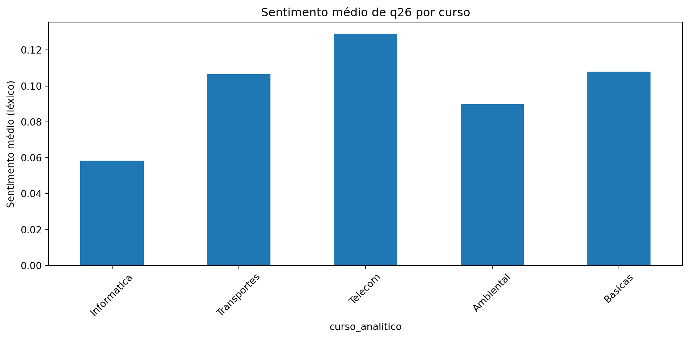
q26 por ano analítico
| ano_analitico | n_comentarios | n_turmas | n_disciplinas | tamanho_medio | sentimento_medio | prop_positivos | prop_neutros | prop_negativos | |
|---|---|---|---|---|---|---|---|---|---|
| 0 | 1 | 1540 | 159 | 30 | 10.794156 | 0.097998 | 0.203247 | 0.690909 | 0.105844 |
| 1 | 2 | 860 | 149 | 35 | 12.917442 | 0.075161 | 0.187209 | 0.698837 | 0.113953 |
| 2 | 3 | 504 | 106 | 36 | 12.265873 | 0.111706 | 0.204365 | 0.714286 | 0.081349 |
| 3 | 4 | 378 | 66 | 26 | 11.306878 | 0.081431 | 0.187831 | 0.714286 | 0.097884 |
| 4 | 5 | 209 | 30 | 13 | 10.588517 | 0.110845 | 0.210526 | 0.708134 | 0.081340 |
| 5 | 6 | 103 | 14 | 5 | 8.776699 | 0.093851 | 0.145631 | 0.796117 | 0.058252 |
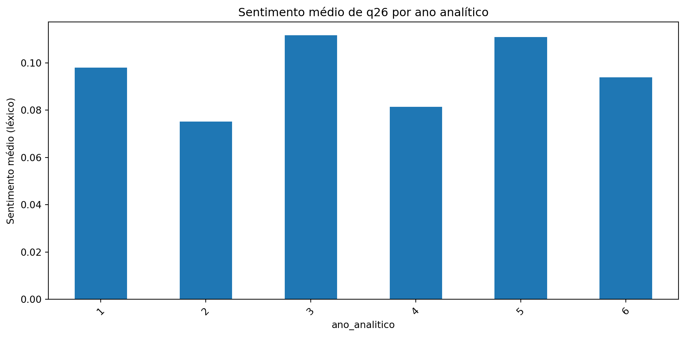
Nuvens de palavras — q26
FT como um todo
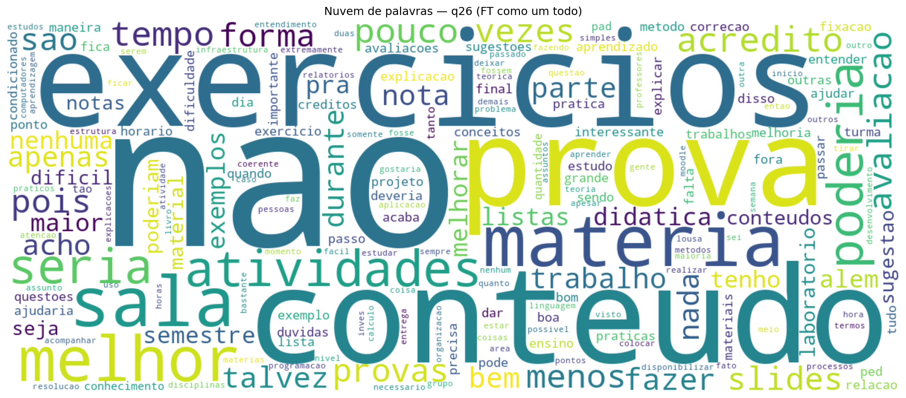
Por curso
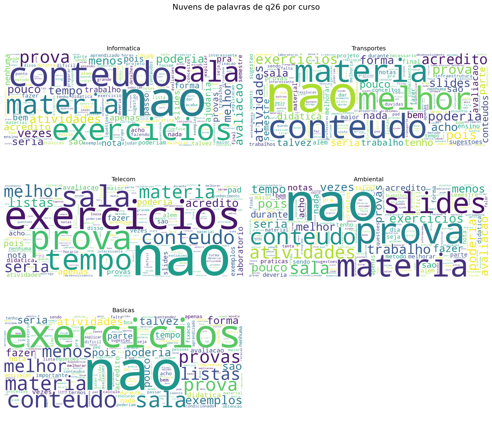
Por ano analítico
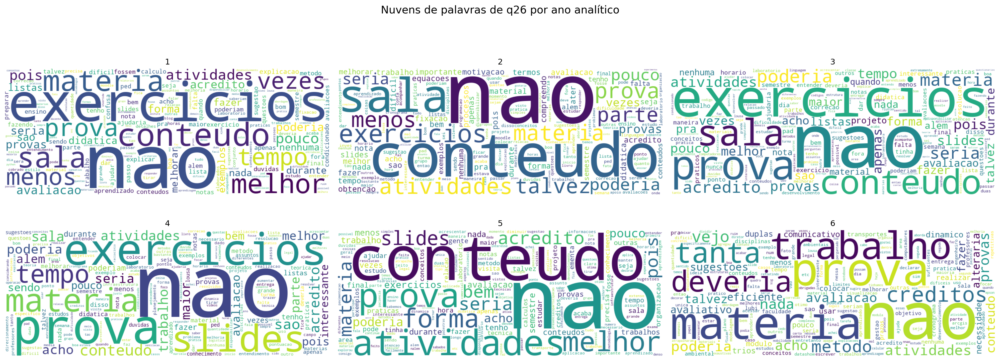
Termos e bigramas mais frequentes — q26
| token | frequencia | |
|---|---|---|
| 0 | nao | 1977 |
| 1 | conteudo | 666 |
| 2 | exercicios | 642 |
| 3 | prova | 552 |
| 4 | materia | 550 |
| 5 | sala | 508 |
| 6 | melhor | 410 |
| 7 | atividades | 390 |
| 8 | poderia | 382 |
| 9 | seria | 369 |
| 10 | tempo | 347 |
| 11 | acredito | 347 |
| 12 | pouco | 346 |
| 13 | pois | 321 |
| 14 | vezes | 319 |
| 15 | menos | 312 |
| 16 | avaliacao | 307 |
| 17 | provas | 288 |
| 18 | sao | 270 |
| 19 | slides | 268 |
| 20 | forma | 265 |
| 21 | fazer | 245 |
| 22 | talvez | 234 |
| 23 | nada | 228 |
| 24 | acho | 226 |
| 25 | trabalho | 214 |
| 26 | apenas | 211 |
| 27 | nota | 209 |
| 28 | durante | 209 |
| 29 | bem | 208 |
| bigrama | frequencia | |
|---|---|---|
| 0 | nao tenho | 145 |
| 1 | seria interessante | 81 |
| 2 | listas exercicios | 79 |
| 3 | alem disso | 79 |
| 4 | fixacao conteudo | 78 |
| 5 | nenhuma sugestao | 59 |
| 6 | tirar duvidas | 53 |
| 7 | passo passo | 48 |
| 8 | nao sei | 45 |
| 9 | talvez ater | 45 |
| 10 | ater menos | 45 |
| 11 | menos processos | 45 |
| 12 | processos obtencao | 45 |
| 13 | obtencao equacoes | 45 |
| 14 | equacoes compreendo | 45 |
| 15 | compreendo parte | 45 |
| 16 | parte importante | 45 |
| 17 | importante fixacao | 45 |
| 18 | conteudo termos | 45 |
| 19 | termos motivacao | 45 |
| 20 | seria melhor | 41 |
| 21 | pois nao | 41 |
| 22 | nada acrescentar | 39 |
| 23 | metodo avaliacao | 38 |
| 24 | tenho sugestoes | 38 |
Temas mais citados — q26
| proporcao | |
|---|---|
| didatica_clareza | 0.142689 |
| organizacao_ritmo | 0.099373 |
| material_apoio | 0.096237 |
| exercicios_pratica | 0.272442 |
| avaliacao_correcao | 0.213250 |
| atendimento_duvidas | 0.077617 |
| infraestrutura | 0.140141 |
| motivacao_relacao | 0.102313 |
| curso_analitico | didatica_clareza | organizacao_ritmo | material_apoio | exercicios_pratica | avaliacao_correcao | atendimento_duvidas | infraestrutura | motivacao_relacao | |
|---|---|---|---|---|---|---|---|---|---|
| 0 | Ambiental | 0.135171 | 0.122047 | 0.144357 | 0.255906 | 0.266404 | 0.078740 | 0.129921 | 0.120735 |
| 1 | Basicas | 0.145098 | 0.069804 | 0.076078 | 0.308235 | 0.207059 | 0.101176 | 0.155294 | 0.116863 |
| 2 | Informatica | 0.171608 | 0.113208 | 0.100629 | 0.296496 | 0.244385 | 0.053010 | 0.124888 | 0.089847 |
| 3 | Telecom | 0.157270 | 0.148368 | 0.124629 | 0.359050 | 0.270030 | 0.130564 | 0.195846 | 0.091988 |
| 4 | Transportes | 0.114014 | 0.076010 | 0.090261 | 0.220903 | 0.142518 | 0.061758 | 0.116390 | 0.057007 |
| ano_analitico | didatica_clareza | organizacao_ritmo | material_apoio | exercicios_pratica | avaliacao_correcao | atendimento_duvidas | infraestrutura | motivacao_relacao | |
|---|---|---|---|---|---|---|---|---|---|
| 0 | 1 | 0.170779 | 0.095455 | 0.076623 | 0.254545 | 0.212987 | 0.072727 | 0.146104 | 0.081818 |
| 1 | 2 | 0.147674 | 0.105814 | 0.113953 | 0.313953 | 0.223256 | 0.081395 | 0.127907 | 0.143023 |
| 2 | 3 | 0.138889 | 0.107143 | 0.119048 | 0.337302 | 0.238095 | 0.093254 | 0.162698 | 0.097222 |
| 3 | 4 | 0.137566 | 0.121693 | 0.166667 | 0.291005 | 0.264550 | 0.092593 | 0.121693 | 0.105820 |
| 4 | 5 | 0.095694 | 0.086124 | 0.114833 | 0.267943 | 0.177033 | 0.071770 | 0.095694 | 0.114833 |
| 5 | 6 | 0.048544 | 0.097087 | 0.029126 | 0.145631 | 0.320388 | 0.019417 | 0.067961 | 0.087379 |
Tabelas finais para exportação
Resumo sintético q25
| periodo | n_comentarios | n_turmas | n_disciplinas | tamanho_medio | sentimento_medio | prop_positivos | prop_neutros | prop_negativos | |
|---|---|---|---|---|---|---|---|---|---|
| 0 | 2022.2 | 939 | 112 | 92 | 8.077742 | 0.617803 | 0.637913 | 0.347178 | 0.014909 |
| 1 | 2023.1 | 1007 | 106 | 86 | 9.461768 | 0.585998 | 0.611718 | 0.367428 | 0.020854 |
| 2 | 2023.2 | 694 | 118 | 101 | 8.171470 | 0.550768 | 0.579251 | 0.397695 | 0.023055 |
| 3 | 2024.1 | 993 | 136 | 109 | 8.625378 | 0.600868 | 0.617321 | 0.372608 | 0.010070 |
| 4 | 2024.2 | 678 | 133 | 113 | 8.657817 | 0.589230 | 0.619469 | 0.355457 | 0.025074 |
| 5 | 2025.1 | 1038 | 137 | 113 | 8.359345 | 0.603757 | 0.634875 | 0.337187 | 0.027938 |
| 6 | 2025.2 | 668 | 122 | 100 | 8.121257 | 0.567615 | 0.604790 | 0.366766 | 0.028443 |
Resumo sintético q26
| periodo | n_comentarios | n_turmas | n_disciplinas | tamanho_medio | sentimento_medio | prop_positivos | prop_neutros | prop_negativos | |
|---|---|---|---|---|---|---|---|---|---|
| 0 | 2022.2 | 815 | 113 | 93 | 10.516564 | 0.082261 | 0.192638 | 0.698160 | 0.109202 |
| 1 | 2023.1 | 883 | 108 | 88 | 10.130238 | 0.084618 | 0.176670 | 0.729332 | 0.093998 |
| 2 | 2023.2 | 572 | 112 | 95 | 10.921329 | 0.079720 | 0.171329 | 0.739510 | 0.089161 |
| 3 | 2024.1 | 860 | 140 | 112 | 11.940698 | 0.133124 | 0.230233 | 0.681395 | 0.088372 |
| 4 | 2024.2 | 566 | 125 | 107 | 12.349823 | 0.075854 | 0.203180 | 0.669611 | 0.127208 |
| 5 | 2025.1 | 873 | 129 | 106 | 10.586483 | 0.108076 | 0.198167 | 0.720504 | 0.081329 |
| 6 | 2025.2 | 533 | 114 | 94 | 13.440901 | 0.040981 | 0.170732 | 0.699812 | 0.129456 |
Temas por curso em q25
| curso_analitico | didatica_clareza | organizacao_ritmo | material_apoio | exercicios_pratica | avaliacao_correcao | atendimento_duvidas | infraestrutura | motivacao_relacao | |
|---|---|---|---|---|---|---|---|---|---|
| 0 | Ambiental | 0.338655 | 0.092360 | 0.054732 | 0.194983 | 0.132269 | 0.126568 | 0.085519 | 0.198404 |
| 1 | Basicas | 0.476030 | 0.089129 | 0.089804 | 0.213369 | 0.130317 | 0.145847 | 0.069548 | 0.109386 |
| 2 | Informatica | 0.329795 | 0.082638 | 0.103867 | 0.205459 | 0.109174 | 0.094769 | 0.079606 | 0.127369 |
| 3 | Telecom | 0.323288 | 0.106849 | 0.065753 | 0.213699 | 0.093151 | 0.106849 | 0.084932 | 0.147945 |
| 4 | Transportes | 0.270909 | 0.089091 | 0.050909 | 0.254545 | 0.085455 | 0.076364 | 0.052727 | 0.201818 |
Temas por curso em q26
| curso_analitico | didatica_clareza | organizacao_ritmo | material_apoio | exercicios_pratica | avaliacao_correcao | atendimento_duvidas | infraestrutura | motivacao_relacao | |
|---|---|---|---|---|---|---|---|---|---|
| 0 | Ambiental | 0.135171 | 0.122047 | 0.144357 | 0.255906 | 0.266404 | 0.078740 | 0.129921 | 0.120735 |
| 1 | Basicas | 0.145098 | 0.069804 | 0.076078 | 0.308235 | 0.207059 | 0.101176 | 0.155294 | 0.116863 |
| 2 | Informatica | 0.171608 | 0.113208 | 0.100629 | 0.296496 | 0.244385 | 0.053010 | 0.124888 | 0.089847 |
| 3 | Telecom | 0.157270 | 0.148368 | 0.124629 | 0.359050 | 0.270030 | 0.130564 | 0.195846 | 0.091988 |
| 4 | Transportes | 0.114014 | 0.076010 | 0.090261 | 0.220903 | 0.142518 | 0.061758 | 0.116390 | 0.057007 |
Conclusões metodológicas
- O documento analisa
q25eq26separadamente. - A proporção de comentários foi medida tanto no nível global quanto ao longo do tempo.
- A análise por agrupamento usa curso analítico e ano analítico, mantendo a mesma padronização do restante do projeto.
- A análise de sentimentos é heurística e serve como indicador exploratório.
- As nuvens de palavras ajudam a visualizar vocabulário recorrente.
- Os temas por palavras-chave ajudam a transformar comentários livres em sinais mais interpretáveis para a coordenação.